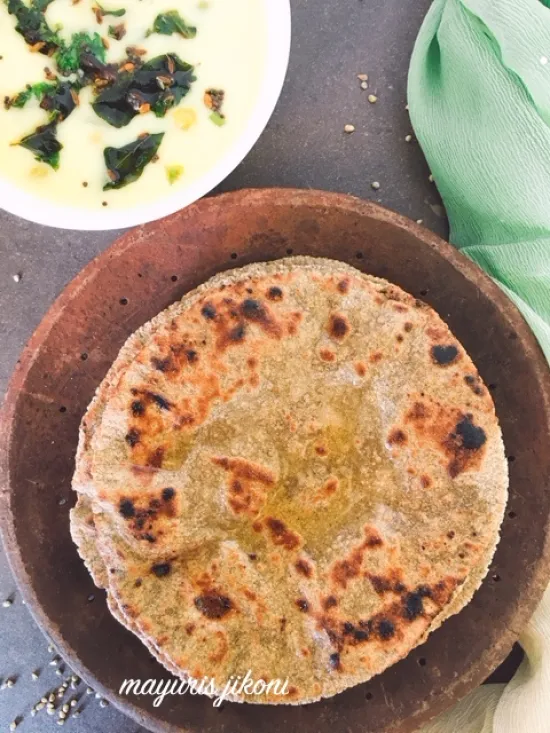

* રોટલો બનાવવા માટે ની સામગ્રી :
- બે ચમચી જેટલી આદુ-મરચાની પેસ્ટ
- 2 ચમચી જેટલી લીલી ડુંગળી
- બે ચમચી જેટલા લીલા ધાણા
- 2 ચમચી જેટલું લીલું લસણ
- લીલા લસણ ના પાંદડા
- ડુંગળીના લીલા પાન
- બે ચમચી જેટલી લીલી મેથી
* રોટલા માટે:
- સૌપ્રથમ મસાલા રોટલો બનાવતા બનાવવા માટે અહીં મેં બે ચમચી જેટલી આદુ-મરચાની પેસ્ટ
- 2 ચમચી જેટલી લીલી ડુંગળી નો વાઈટ ભાગ હોય તે બે ચમચી જેટલા લીલા ધાણા
- 2 ચમચી જેટલું લીલું લસણ તેનો વાઈટ ભાગ લીલા લસણ ના પાંદડા
- ડુંગળીના લીલા પાન અને બે ચમચી જેટલી લીલી મેથી અહીં મેં લીધી છે
|
* મસાલો રોટલો બનાવાની રીત:
ઢો
- સૌ પ્રથમ આપણે મસાલાને સાંતળવાનો છે. તો તેને માટે આપણે ગેસ પર એક બેન મુકીશું અને તેમાં એક ચમચી ઘી ઉમેરી ગરમ થાય એટલે તેમાં ચપટી હિંગ ઉમેરીશું. અને હવે તેમાં લીલા લસણ નો વાઈટ ભાગ અને ડુંગળી નો વાઈટ ભાગ ઉમેરીશું સાથે આદુ મરચાની પેસ્ટ ઉમેરી થોડું સાંતળી લઈશું.
- હવે તેમાં લીલા લસણ ના પાન લીલી ડુંગળી ના પાન નાખી બધું જ સરસ મિક્સ કરી લઈશું અને હવે તેમાં લીલા ધાણા નાખી ૧ થી ૨ સાંતળી લઈશું. સરસ સંતળાઈ જાય એટલે ગેસ ની ફ્લેમ બંધ કરી મસાલાને ઠંડો થવા દઈશું.
- હવે મસાલો ઠંડો થઈ જાય એટલે કાથરોટ લો અને તેમાં એક વાટકા જેટલો બાજરીનો લોટ લઈશું લોટ સરસ રીતે ચલાઈ જાય એટલે તેમાં સ્વાદ પ્રમાણે મીઠું ઉમેરીશું અહીં આપણે મસાલામાં મીઠું નથી ઉમેરીશું કારણ કે મીઠું ઉમેરવાથી પાણી થાય એટલે આપણે લોટમાં જ મીઠું ઉમેરીશું
- હવે લોટમાં આપણે જે મસાલો સાંતળીને તૈયાર કર્યો હતો તે હવે ઠંડો થઈ ગયો છે તો તેને આપણે લોટમાં ઉમેરી દઈશું અને મસાલા ને લોટ સાથે સારી રીતે મિક્સ કરી લેવાનો છે આજે મસાલા રોટલો તૈયાર થાય છે તે એકદમ ટેસ્ટી બને છે અને શરદી થઇ હોય તો તેમાં પણ આ મસાલા રોટલો એક દવાનું કામ કરે છે.
- હવે સરસ રીતે મિક્સ થઈ જાય એટલે થોડું થોડું પાણી લેતા જઈ લોટ મીડીયમ બાંધી લેવાનો છે. અને આ લોટ ને હથેળીના નીચેના ભાગથી સારી રીતે મસળી લેવાનો છે. કારણ કે ઘઉં ના લોટ માં થોડો ચીકાશ હોય છે અને બાજરી ના લોટ માં નથી હોતો એટલે થોડો મસળવો પડે છે.
- આ રીતે આંગળી પ્રેસ થાય તેવો આપણે લોટ બાંધવાનો છે અને બધો લોટ ભેગો કરી આ રીતનો બોલ બનાવી લેવાનો છે હવે હાથ પર થોડું પાણી લગાવી ગોળગોળ સરસ બોલ બનાવી દઈશું.
- હવે પાટલી ઉપર આપણે એક પ્લાસ્ટિક મૂકીશું તમે કોઈપણ ટ્રાન્સપરન્ટ પ્લાસ્ટિકની થેલી કાપીને યુઝ કરી શકો છો. હવે તેના ઉપર થોડો લોટ ભભરાવી શું અને તેની ઉપર આપણે તે લોટનો લૂઓ તૈયાર કર્યો છે તે મુકીશું. હવે બીજુ પ્લાસ્ટિક તેની ઉપર મૂકી આપણે વેલણની મદદથી થોડો વણી લઈશું.
- હવે પ્લાસ્ટિક કાઢી તેને હાથની મદદથી સાઇડની કોર પ્રેસ કરતા જઈ રોટલો થેપી લેવાનો છે. આ મસાલા લોટને ઘી માં સાંતળેલો મસાલો ઉમેર્યો હોવાથી તેનો રોટલો ટીપાતો નથી અને તે ફાટી જાય છે. આ મસાલા રોટલા ને પાટલી પર થેપીને જ બનાવવો પડે છે.
- હવે બધી જ સાઇડથી સરસ રીતે એકસરખો રોટલો બની જાય પછી વેલણની મદદથી એકદમ રાઉન્ડ શેપ આપી જાડો અને પાતળો ન રહે તે રીતે વેલણ ની મદદથી વણી લઈશું. હવે રોટલાને તાવડીમાં નાખીશું. (Note:- તાવડી ને પહેલેથી જ ગરમ કરવા મૂકી દેવી)
- તાવડી સરસ તપી ગયેલી હોય તો જ રોટલો તાવડીમાં નાખવાનો, નહિતર રોટલો સારો બનશે નહીં. હવે તમને જો રોટલો તાવડીમાં નાખતા ન ફાવતું હોય તો તમે રોટલા ને બંને હાથની મદદથી ધીમેથી તાવડીમાં મૂકી શકો છો.
- ફ્રેન્ડ્સ તમને મારી આ રેસિપી પસંદ આવી હોય અને આવી નવી નવી રેસીપી જોવી હોય તો મારી ચેનલ પર જઈને પણ જોઈ શકો છો. અમારી બીજી વાનગીઓ પણ જોઈ શકો છો જે નીચે મુજબ છે,
|